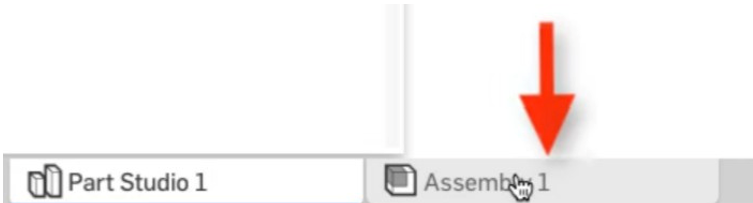
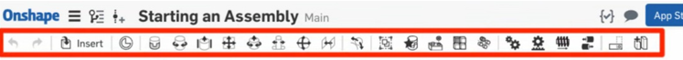
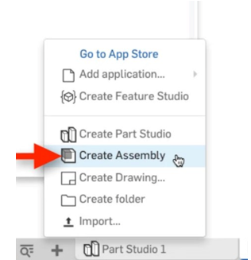
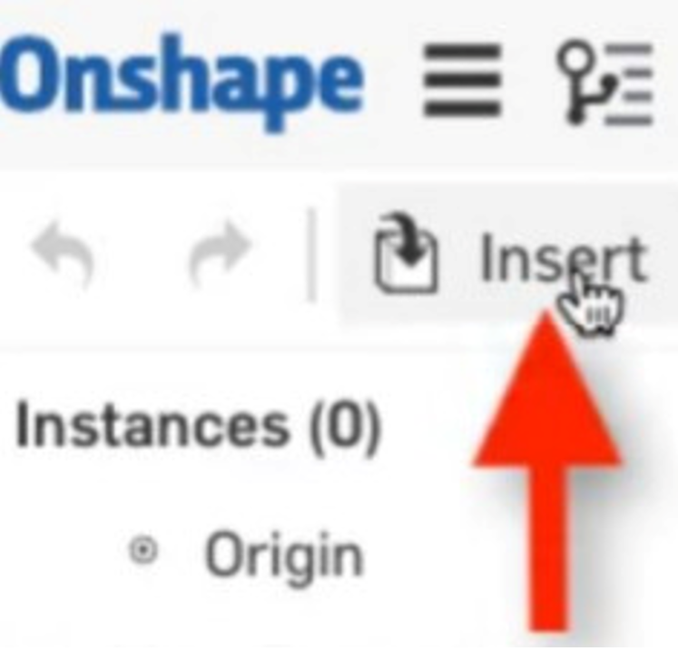
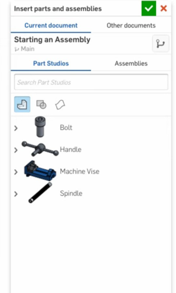
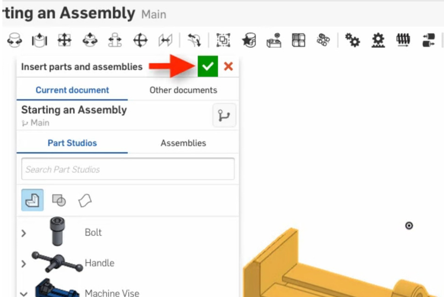
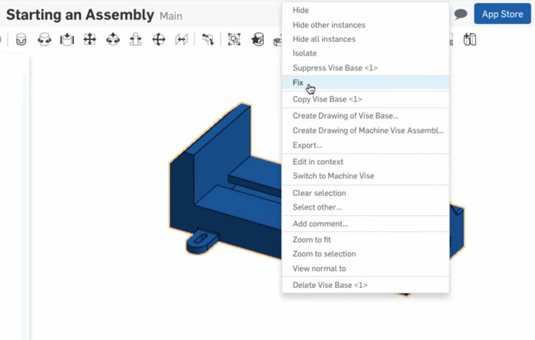
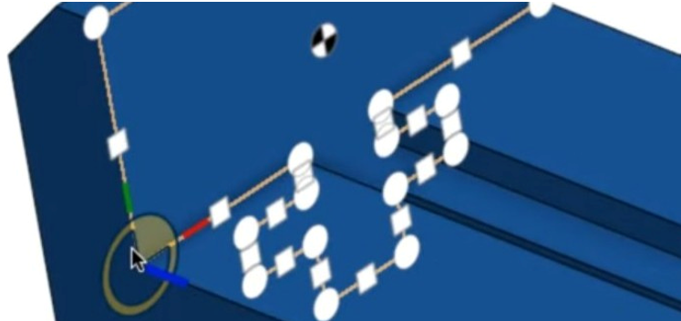
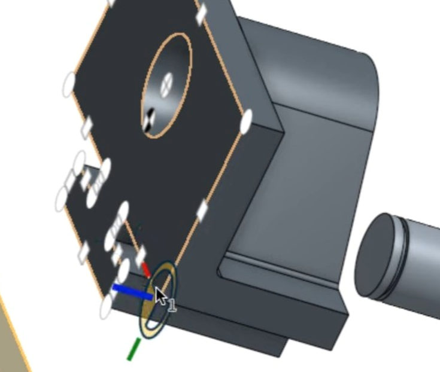
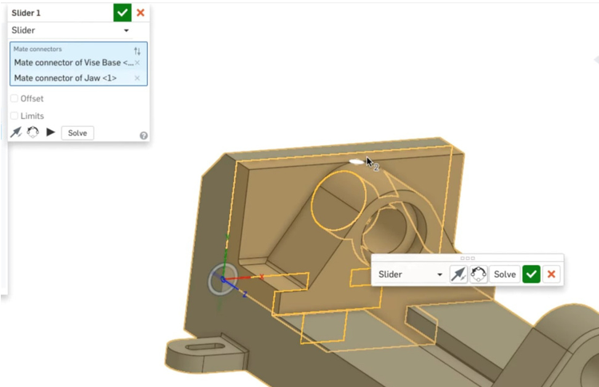

Onshape и его использование в FTC
При разработке робота для FTC важно заранее продумать его конструкцию и компоненты. Для этого широко используется 3D-моделирование, которое помогает создать точный цифровой прототип. Существуют различные платформы для проектирования, такие как Fusion 360, SolidWorks. Однако, если ваш ноутбук или компьютер не обладает высокой производительностью, отличным решением станет Onshape. Благодаря облачной архитектуре он позволяет выполнять сложные расчёты и рендеринг на удалённых серверах, что делает его доступным даже на слабых устройствах.
Что такое Onshape?
Onshape — это мощная облачная платформа для 3D моделирования, которая позволяет создавать, редактировать и управлять проектами в режиме реального времени. В отличие от традиционных CAD-систем, Onshape работает полностью в браузере, что делает его доступным с любого устройства, подключенного к интернету.
Почему именно Onshape?
В соревнованиях FIRST Tech Challenge (FTC) точное проектирование конструкции робота играет важную роль. Onshape помогает командам:
- Создавать точные 3D-модели робота перед началом сборки.
- Планировать размещение компонентов (моторы, сервоприводы, контроллеры, приводы и др.).
- Избегать ошибок в конструкции до начала физической сборки.
- Совместно работать над проектом в режиме реального времени.
- Использовать готовые библиотеки компонентов от производителей (REV Robotics, goBILDA, Actobotics и др.).
Что нужно знать перед началом?
Перед началом работы необходимо разобраться с основными понятиями, такими как Assembly (сборка), Mates (соединения) и другие ключевые элементы Onshape. Это поможет эффективно проектировать и собирать конструкцию без ошибок.
Основные Виды Mates
Mates используются для определения взаимного расположения и движения компонентов в сборке. В Onshape они основаны на использовании Mate Connectors, что упрощает процесс настройки. Основные виды mates:
- Fastened Mate - полностью фиксирует два компонента относительно друг друга.
- Revolute Mate - позволяет одному компоненту вращаться вокруг одной оси.
- Slider Mate - обеспечивает линейное перемещение вдоль одной оси.
- Cylindrical Mate - сочетает вращательное и скользящее движения.
- Pin Slot Mate - позволяет вращаться вокруг одной оси и скользить вдоль другой.
- Planar Mate - ограничивает вращение вокруг двух осей и перемещение вдоль одной.
- Ball Mate - обеспечивает свободное вращение в пределах точки соединения.
- Parallel Mate - делает две оси или плоскости параллельными.
- Perpendicular Mate - устанавливает перпендикулярность между осями или плоскостями.
- Tangent Mate - создает касательное соединение между поверхностями.
Основы работы с Assembly в Onshape.
В Onshape Assembly используются для объединения деталей и компонентов, а также для проверки их подвижности и взаимодействия.
Начало работы
При создании нового документа появляются две вкладки: Part Studio и Assembly.
Открывая Assembly, вы увидите панель инструментов, содержащую команды для вставки деталей и настройки Mates.
Можно создать несколько Assembly в одном документе, добавляя их через + в нижнем левом углу.
Вставка деталей
Чтобы добавить первую деталь, нажмите Insert в панели инструментов.
В появившемся окне можно выбрать объекты из текущего или другого документа, включая Part Studio, Assembly, эскизы и поверхности.
Совет: Первую деталь лучше вставлять без клика в графическом пространстве – просто нажмите зеленую галочку.
Это сохранит её исходное положение относительно начала координат. После вставки её можно зафиксировать (правый клик → Fix).
Основы работы с Mates в Onshape.
Mates используются для точного позиционирования деталей в Assembly. В отличие от традиционных CAD-систем, где каждое движение детали настраивается отдельно, Onshape использует Mate Connectors – специальные точки на деталях, содержащие информацию о их положении и ориентации.
Как работают Mate Connectors?
При выборе любого Mate из панели инструментов и наведении курсора на деталь появляются возможные Mate Connectors. Они отображаются в виде координатных систем (X, Y, Z), что позволяет Onshape автоматически определять правильное положение детали при соединении.
Процесс соединения деталей
- Выберите точку сопряжения первой детали (ЛКМ). 
- Выберите точку сопряжения второй детали (ЛКМ). 
- Onshape автоматически объединит детали, учитывая их координатные системы. 
Где брать 3D-модели деталей?
Вы можете найти 3D-модели деталей в формате, совместимом с Onshape, в обширных библиотеках готовых компонентов, например Insert tool.
Полезные Ресурсы:
Заключение
Использование Onshape для FTC значительно упрощает процесс проектирования робота, позволяя избежать ошибок, улучшить конструкцию и сэкономить время на сборке. Освоив основные принципы работы в Onshape, ваша команда сможет эффективнее проектировать, тестировать и реализовывать свои идеи в соревнованиях!